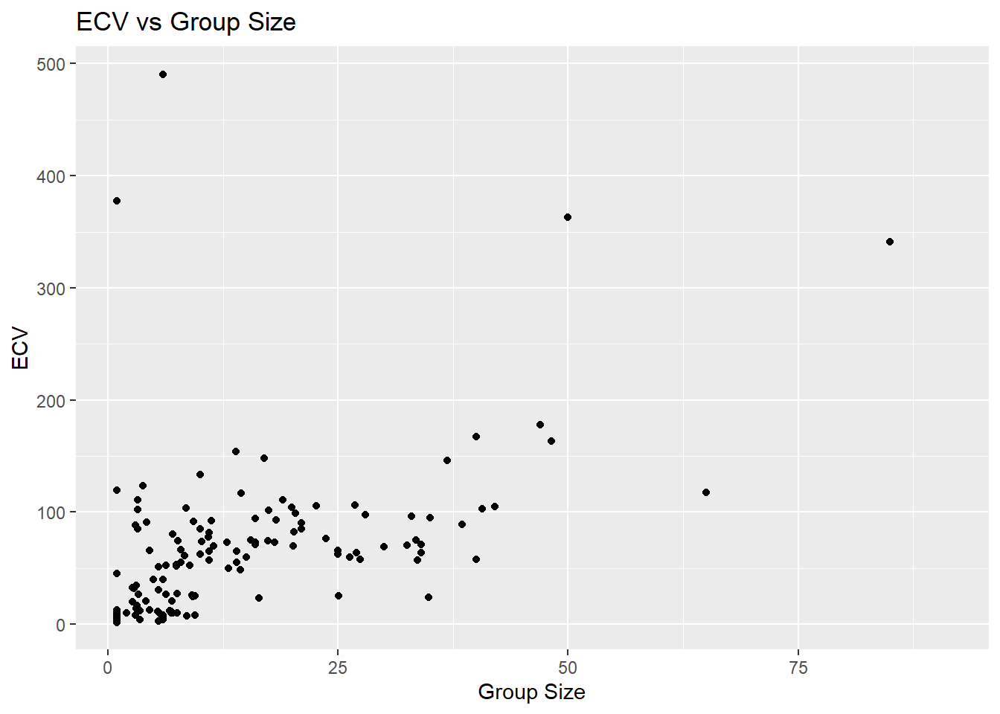
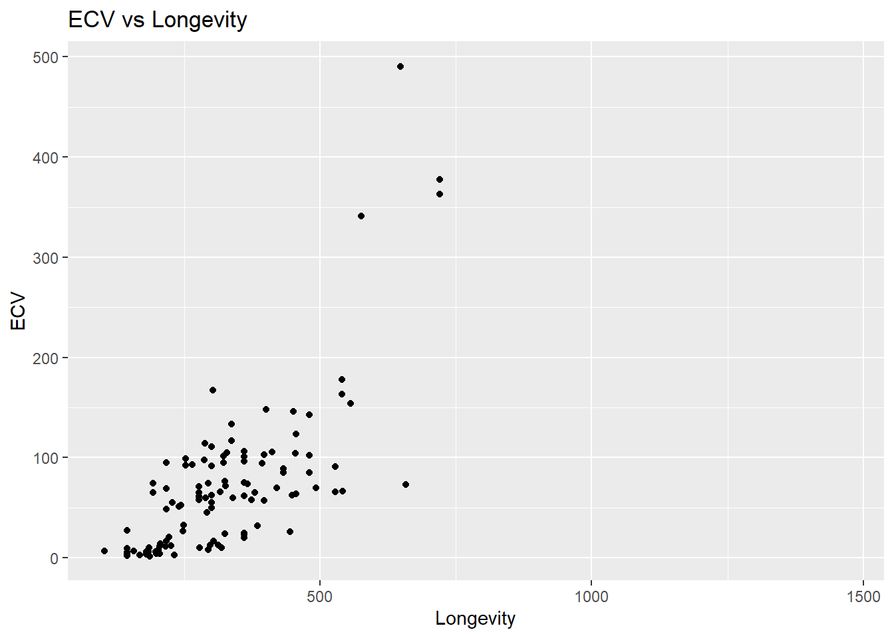
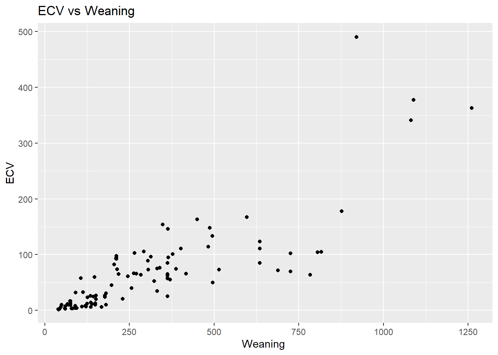
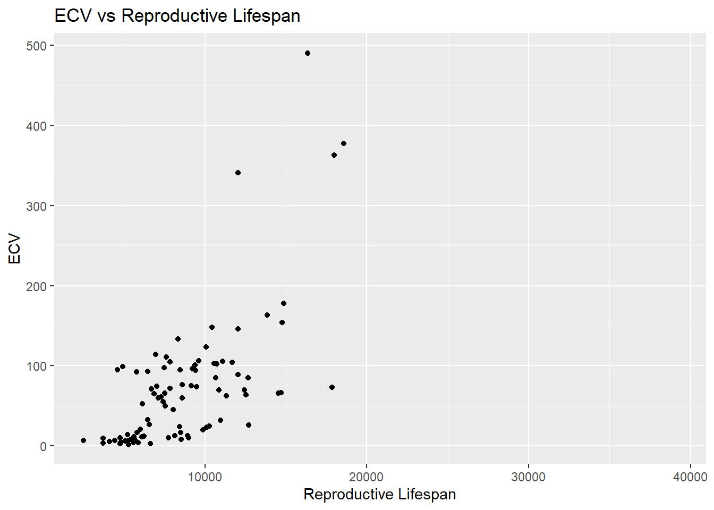
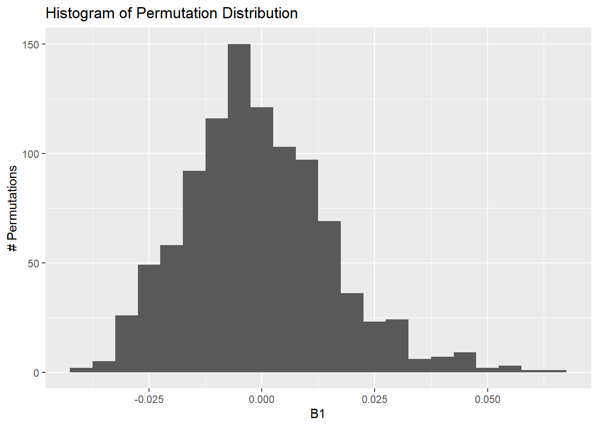

Using the {tidyverse} read_csv() function, load the “Street_et_al_2017.csv” dataset from this URL as a “tibble” named d.
Do a quick exploratory data analysis where you generate the five-number summary (median, minimum and maximum and 1st and 3rd quartile values), plus mean and standard deviation, for each quantitative variable.
library(tidyverse)
Warning: package 'tidyverse' was built under R version 4.3.3
Warning: package 'ggplot2' was built under R version 4.3.3
Warning: package 'tidyr' was built under R version 4.3.3
Warning: package 'readr' was built under R version 4.3.3
Warning: package 'purrr' was built under R version 4.3.3
Warning: package 'lubridate' was built under R version 4.3.3
── Attaching core tidyverse packages ──────────────────────── tidyverse 2.0.0 ──
✔ dplyr 1.1.4 ✔ readr 2.1.5
✔ forcats 1.0.0 ✔ stringr 1.5.1
✔ ggplot2 3.5.1 ✔ tibble 3.2.1
✔ lubridate 1.9.4 ✔ tidyr 1.3.1
✔ purrr 1.0.4
── Conflicts ────────────────────────────────────────── tidyverse_conflicts() ──
✖ dplyr::filter() masks stats::filter()
✖ dplyr::lag() masks stats::lag()
ℹ Use the conflicted package (<http://conflicted.r-lib.org/>) to force all conflicts to become errors
library(dplyr)library(skimr)
Warning: package 'skimr' was built under R version 4.3.3
Rows: 301 Columns: 13
── Column specification ────────────────────────────────────────────────────────
Delimiter: ","
chr (2): Species, Taxonomic_group
dbl (11): Social_learning, Research_effort, ECV, Group_size, Gestation, Wean...
ℹ Use `spec()` to retrieve the full column specification for this data.
ℹ Specify the column types or set `show_col_types = FALSE` to quiet this message.
skim(d)
Data summary
Name
d
Number of rows
301
Number of columns
13
_______________________
Column type frequency:
character
2
numeric
11
________________________
Group variables
None
Variable type: character
skim_variable
n_missing
complete_rate
min
max
empty
n_unique
whitespace
Species
0
1
10
41
0
301
0
Taxonomic_group
0
1
10
12
0
3
0
Variable type: numeric
skim_variable
n_missing
complete_rate
mean
sd
p0
p25
p50
p75
p100
hist
Social_learning
98
0.67
2.30
16.51
0.00
0.00
0.00
0.00
214.00
▇▁▁▁▁
Research_effort
115
0.62
38.76
80.59
1.00
6.00
16.00
37.75
755.00
▇▁▁▁▁
ECV
117
0.61
68.49
82.84
1.63
11.82
58.55
86.20
491.27
▇▁▁▁▁
Group_size
114
0.62
13.26
15.20
1.00
3.12
7.50
18.23
91.20
▇▂▁▁▁
Gestation
161
0.47
164.50
38.00
59.99
138.35
166.03
183.26
274.78
▁▅▇▃▁
Weaning
185
0.39
311.09
253.08
40.00
121.66
234.16
388.78
1260.81
▇▃▁▁▁
Longevity
181
0.40
331.97
165.67
103.00
216.00
301.20
393.30
1470.00
▇▂▁▁▁
Sex_maturity
194
0.36
1480.23
999.23
283.18
701.52
1427.17
1894.11
5582.93
▇▆▂▁▁
Body_mass
63
0.79
6795.18
14229.83
31.23
739.44
3553.50
7465.00
130000.00
▇▁▁▁▁
Maternal_investment
197
0.35
478.64
292.07
99.99
255.88
401.35
592.22
1492.30
▇▅▂▁▁
Repro_lifespan
206
0.32
9064.97
4601.57
2512.16
6126.22
8325.89
10716.60
39129.57
▇▃▁▁▁
HINT: The skim() function from the package {skimr} makes this very easy!
Step 2
From this dataset, plot brain size (ECV) as a function of social group size (Group_size), longevity (Longevity), juvenile period length (Weaning), and reproductive lifespan (Repro_lifespan).’
library(ggplot2)#ECV vs Group_sizeggplot(d, aes(x = Group_size, y = ECV)) +geom_point() +labs(title ="ECV vs Group Size",x ="Group Size",y ="ECV")
Warning: Removed 150 rows containing missing values or values outside the scale range
(`geom_point()`).

#ECV vs Longevityggplot(d, aes(x = Longevity, y = ECV)) +geom_point() +labs(title ="ECV vs Longevity",x ="Longevity",y ="ECV")
Warning: Removed 189 rows containing missing values or values outside the scale range
(`geom_point()`).

#ECV vs Weaning ggplot(d, aes(x = Weaning, y = ECV)) +geom_point() +labs(title ="ECV vs Weaning",x ="Weaning ",y ="ECV")
Warning: Removed 199 rows containing missing values or values outside the scale range
(`geom_point()`).

#ECV vs Repro_lifespan ggplot(d, aes(x = Repro_lifespan, y = ECV)) +geom_point() +labs(title ="ECV vs Reproductive Lifespan",x ="Reproductive Lifespan",y ="ECV")
Warning: Removed 211 rows containing missing values or values outside the scale range
(`geom_point()`).

Step 3
Derive by hand the ordinary least squares regression coefficients β1 and β0 for ECV as a function of social group size.
HINT: You will need to remove rows from your dataset where one of these variables is missing.
Confirm that you get the same results using the lm() function.
m <-lm(Group_size~ECV, data = d)summary(m)
Call:
lm(formula = Group_size ~ ECV, data = d)
Residuals:
Min 1Q Median 3Q Max
-50.503 -6.426 -2.725 3.125 46.109
Coefficients:
Estimate Std. Error t value Pr(>|t|)
(Intercept) 7.00531 1.34791 5.197 6.56e-07 ***
ECV 0.10093 0.01438 7.021 7.26e-11 ***
---
Signif. codes: 0 '***' 0.001 '**' 0.01 '*' 0.05 '.' 0.1 ' ' 1
Residual standard error: 12.21 on 149 degrees of freedom
Multiple R-squared: 0.2486, Adjusted R-squared: 0.2436
F-statistic: 49.3 on 1 and 149 DF, p-value: 7.259e-11
Step 5
Repeat the analysis above for three different major radiations of primates - “catarrhines”, “platyrrhines”, and “strepsirhines”) separately. These are stored in the variable Taxonomic_group. Do your regression coefficients differ among groups? How might you determine this?
Call:
lm(formula = Group_size ~ ECV, data = d_catarrhines)
Residuals:
Min 1Q Median 3Q Max
-32.692 -9.803 -2.807 9.102 53.398
Coefficients:
Estimate Std. Error t value Pr(>|t|)
(Intercept) 15.37445 3.16400 4.859 7.26e-06 ***
ECV 0.04755 0.02401 1.980 0.0518 .
---
Signif. codes: 0 '***' 0.001 '**' 0.01 '*' 0.05 '.' 0.1 ' ' 1
Residual standard error: 15.48 on 68 degrees of freedom
Multiple R-squared: 0.0545, Adjusted R-squared: 0.0406
F-statistic: 3.92 on 1 and 68 DF, p-value: 0.05177
#platyrrhines Analysism_platyrrhines <-lm(Group_size~ECV, data = d_platyrrhines)summary(m_platyrrhines)
Call:
lm(formula = Group_size ~ ECV, data = d_platyrrhines)
Residuals:
Min 1Q Median 3Q Max
-12.1670 -5.5388 -0.6444 1.2833 25.2320
Coefficients:
Estimate Std. Error t value Pr(>|t|)
(Intercept) 5.18692 2.24099 2.315 0.027003 *
ECV 0.18356 0.04254 4.315 0.000136 ***
---
Signif. codes: 0 '***' 0.001 '**' 0.01 '*' 0.05 '.' 0.1 ' ' 1
Residual standard error: 8.245 on 33 degrees of freedom
Multiple R-squared: 0.3607, Adjusted R-squared: 0.3414
F-statistic: 18.62 on 1 and 33 DF, p-value: 0.0001364
#strepsirhines Analysism_strepsirhines <-lm(Group_size~ECV, data = d_strepsirhines)summary(m_strepsirhines)
Call:
lm(formula = Group_size ~ ECV, data = d_strepsirhines)
Residuals:
Min 1Q Median 3Q Max
-6.4487 -1.2893 -0.7129 0.5132 12.0562
Coefficients:
Estimate Std. Error t value Pr(>|t|)
(Intercept) 1.20674 0.65313 1.848 0.071387 .
ECV 0.13917 0.03575 3.893 0.000332 ***
---
Signif. codes: 0 '***' 0.001 '**' 0.01 '*' 0.05 '.' 0.1 ' ' 1
Residual standard error: 2.852 on 44 degrees of freedom
Multiple R-squared: 0.2562, Adjusted R-squared: 0.2393
F-statistic: 15.15 on 1 and 44 DF, p-value: 0.0003324
Yes, the coefficients are different, you can view this using the summary function above
Regression Coefficients
catarrhines: (B0 = 15.37445, B1 = 0.04755)
platyrrhines: (B0 = 5.18692, B1 = 0.18356)
strepsirhines: (B0 = 1.20674, B1 = 0.13917)
Step 6
For your first regression of ECV on social group size, calculate the standard error for the slope coefficient (B1), the 95% CI, and the p value associated with this coefficient by hand. Also extract this same information from the results of running the lm() function.
SSY <-sum((m$height -mean(m$height))^2)
Warning in mean.default(m$height): argument is not numeric or logical:
returning NA
m <-lm(Group_size~ECV, data = d)#by handSSY <-sum((m$model$Group_size -mean(m$model$Group_size))^2)SSR <-sum((m$fitted.values -mean(m$model$Group_size))^2)(df_regression <-1)
Use a permutation approach with 1000 permutations to generate a null sampling distribution for the slope coefficient. What is it that you need to permute? What is the p value associated with your original slope coefficient? You can use either the quantile method (i.e., using quantiles from the actual permutation-based null sampling distribution) or a theory-based method (i.e., using the standard deviation of the permutation-based null sampling distribution as the estimate of the standard error, along with a normal or t distribution), or both, to calculate this p value.
x <- d$ECVn <-length(x)b1 #original regression slope
[1] 0.1009315
nperm <-1000permutation <-vector(length = n) # set up a vector to hold results for each permutationfor (i in1:nperm) { ECV_samp <-sample(d$ECV) b1_obs <- (cov(ECV_samp, d$Group_size))/var(d$ECV) permutation[i] <- b1_obs}perm_d <-data.frame(permutation = permutation)#histogram of permutationsggplot(perm_d, aes(x = permutation)) +geom_histogram(binwidth =0.005) +labs(x ="B1",y ="# Permutations",title ="Histogram of Permutation Distribution" )

#Theory based#calculate stats of permutationmean_perm <-mean(permutation)sd_perm <-sd(permutation)se_perm <- sd_perm# Calculate the zz <- (b1 - mean_perm) / se_perm# Calculate the p-value with normal distributionp_value_norm <-2* (1-pnorm(abs(z))) #calculate the p-value using the t-distribution df <-length(permutation) -1p_value_t <-2* (1-pt(abs(z), df = df))
I need to permute the calculation of the slope coefficient based off a sample of ECV
The P value associated with my original slope coefficient was: 7.259435e-11 (from broom::tidy(m))
p value based on t-distribution: 7.0864635e-10
Step 8
Use bootstrapping to generate a 95% CI for your estimate of the slope coefficient using both the quantile method and the theory-based method (i.e., using the standard deviation of the bootstrapped sampling distribution as an estimate of the standard error). Do these CIs suggest that your slope coefficient is different from zero?
library(infer)
Warning: package 'infer' was built under R version 4.3.3
boot.slope <- d |># specify modelspecify(Group_size ~ ECV) |># generate bootstrap replicatesgenerate(reps =1000, type ="bootstrap") |># calculate the slope statisticcalculate(stat ="slope")head(boot.slope) # slopes from first few bootstrap replicates
boot.slope.summary <- boot.slope |># summarize the mean, standard error, CI based on the SE and t# distribution, and CI based on the quantile (percentile) methodsummarize(estimate =mean(stat), std.error =sd(stat), lower = estimate - std.error *qt(0.975, df =999), #for theory methodupper = estimate + std.error *qt(0.975, df =999), #for theory methodboot.lower =quantile(stat, 0.025), #for quantile methodboot.upper =quantile(stat, 0.975)) #for quantile method# show summary of bootstrap sampling distributionboot.slope.summary
These CIs do suggest that the slope is different than 0,because 0 is not included in the range of the upper and lower CI for either theory or quantile method.